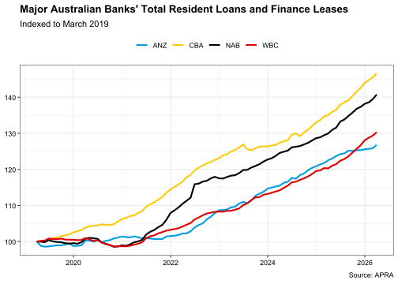

The R package readapra provides a series of function to download and import data from the Australian Prudential Regulation Authority’s (APRA) statistical publications and return them as a tibble object.
Installation
You can install readapra from CRAN using:
install.packages("readapra")Or you can install the development version from GitHub using the remotes package:
remotes::install_github("javanderwal/readapra")Features
The readapra package facilitates the downloading and importing of statistical publications published by APRA. The package also allows for the importing of data from locally saved statistical publication files.
Currently the readapra package only supports the downloading and importing of Authorised Deposit-taking Institution (ADI) statistical publications. The intention is for future versions of readapra to also accommodate APRA’s general insurance, life insurance and friendly societies, private health insurance and superannuation statistical publications.
ADI statistical publications
The following ADI statistical publications can be downloaded and imported with readapra:
Quarterly Authorised Deposit-taking Institution Performance Statistics (QADIPS)
Quarterly Authorised Deposit-taking Institution Centralised Publication (QADICP)
Quarterly Authorised Deposit-taking Institution Property Exposures Statistics (QADIPEXS) (both the current and historic series)
Monthly Authorised Deposit- taking Institution Statistics (MADIS) (both the current and historic series)
Authorised Deposit-taking Institution Points of Presence Statistics (ADIPOPS)
Example
The ability to download and import APRA’s statistical publications with readapra greatly eases the analysis and visualisation of this data via packages such as ggplot2.
The following example demonstrates the plotting of total resident assets on a monthly basis for Australia’s four major banks.
We start by first librarying the required packages:
We then download and import the Monthly Authorised Deposit-taking Institution Statistics (MADIS) data using the read_apra() function:
madis_data <- read_apra(stat_pub = "madis", cur_hist = "current")We then filter and clean-up the desired data like so:
major_bank_assets <-
madis_data %>%
filter(
abn %in% c(48123123124, 33007457141, 12004044937, 11005357522),
series == "Total residents loans and finance leases"
) %>%
mutate(
short_name = dplyr::case_when(
abn == 48123123124 ~ "CBA",
abn == 33007457141 ~ "WBC",
abn == 12004044937 ~ "NAB",
abn == 11005357522 ~ "ANZ",
)
) %>%
group_by(short_name) %>%
mutate(value = 100 * value / first(value)) %>%
ungroup()And then finally we can plot the data using ggplot2:
ggplot(
data = major_bank_assets,
mapping = aes(date, value, colour = short_name)
) +
geom_line(linewidth = 1) +
labs(
title = "Major Australian Banks' Total Resident Loans and Finance Leases",
subtitle = "Indexed to March 2019",
caption = "Source: APRA"
) +
theme_bw() +
theme(
plot.title = element_text(face = "bold"),
legend.position = "top",
legend.title = element_blank(),
axis.title = element_blank(),
axis.text = element_text(colour = "black")
) +
scale_colour_manual(values = c(
"CBA" = "#FECA0A",
"WBC" = "#DF0000",
"NAB" = "#000000",
"ANZ" = "#009FE1"
))
Managing Network Connections
Corporate networks, especially those using Virtual Private Networks (VPNs), may restrict the ability to download files within an R session. A possible fix for this is to utilise the the "wininet" method for downloading files. Users can specify the "wininet" method (or any other download method) for readapra to use by setting the "R_READAPRA_DL_METHOD" environment variable.
To set the "R_READAPRA_DL_METHOD" environment variable to "wininet" for your current session, use the following code:
Sys.setenv("R_READAPRA_DL_METHOD" = "wininet")You can add "R_READAPRA_DL_METHOD" = "wininet" to your .Renviron file to ensure this download setting persists across R sessions. You can conveniently access and edit your .Renviron file with the usethis package:
usethis::edit_r_environ()